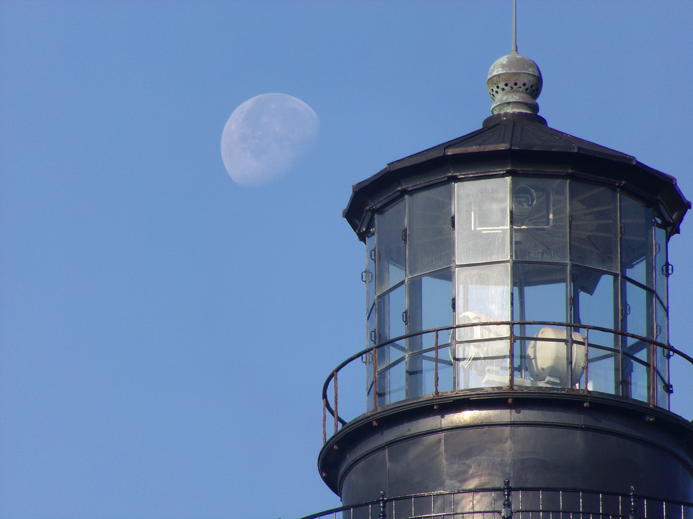
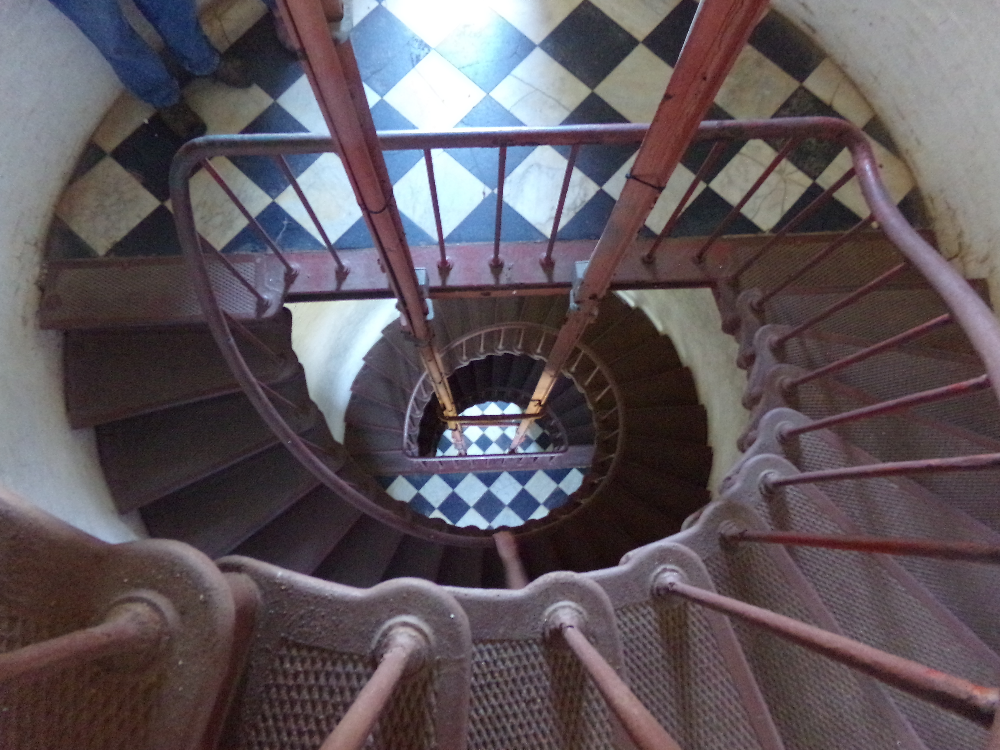
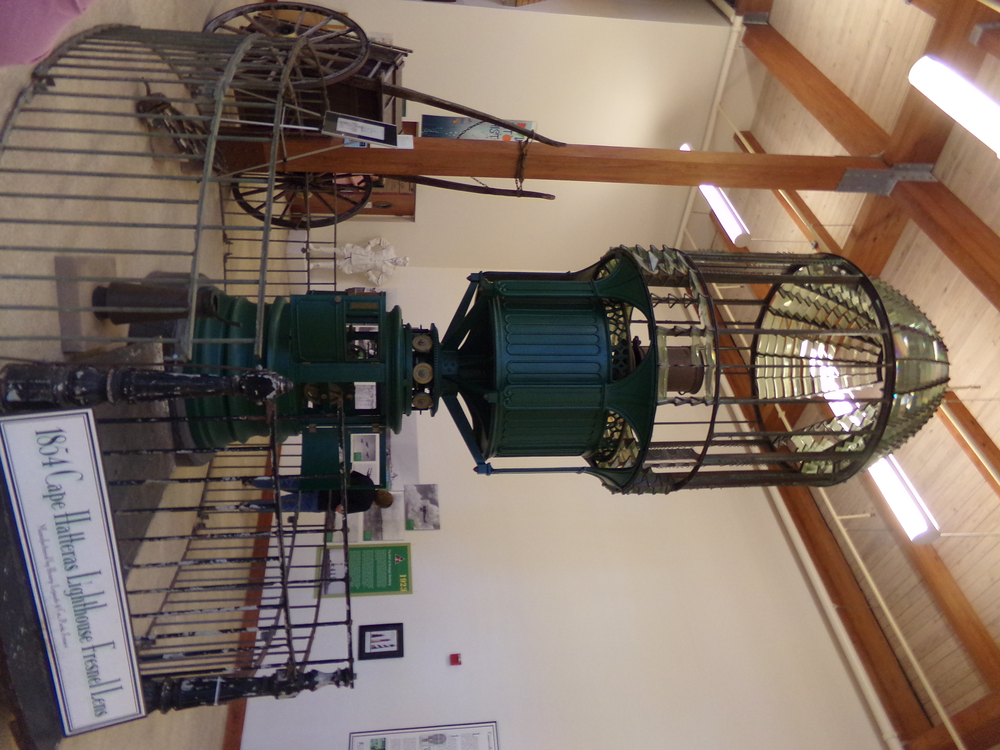
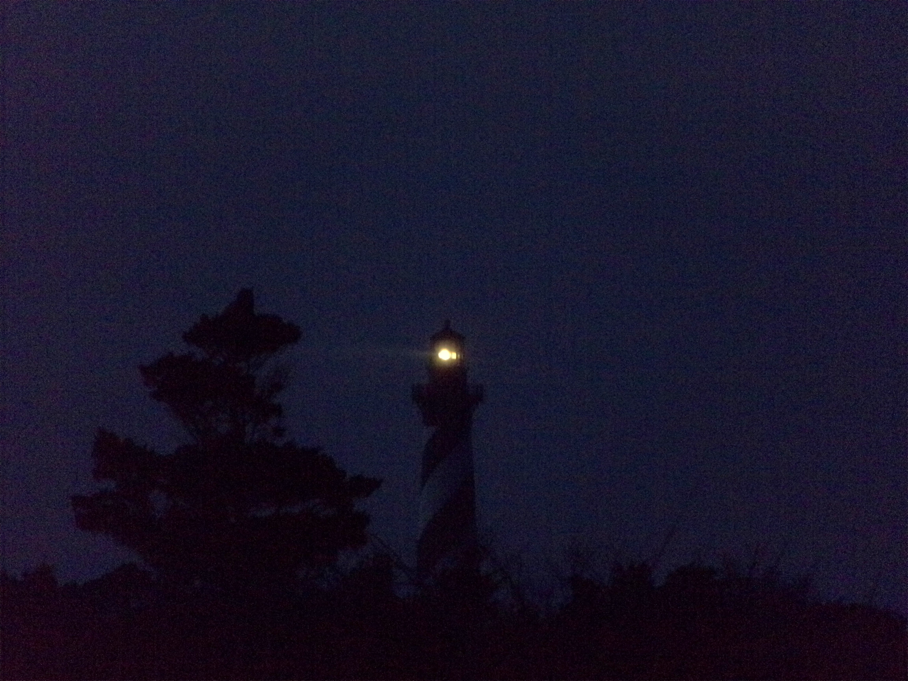
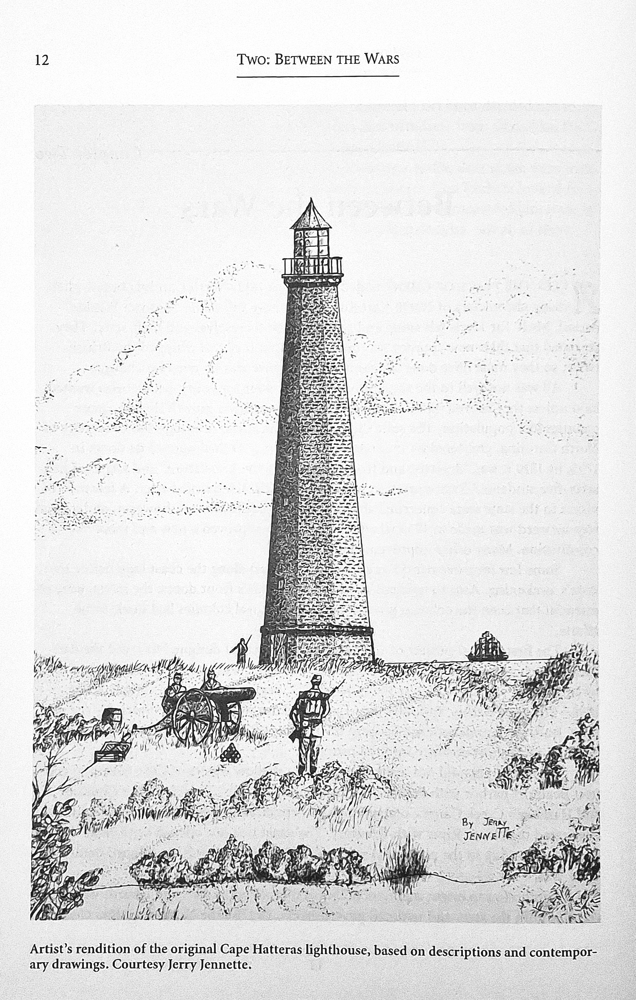
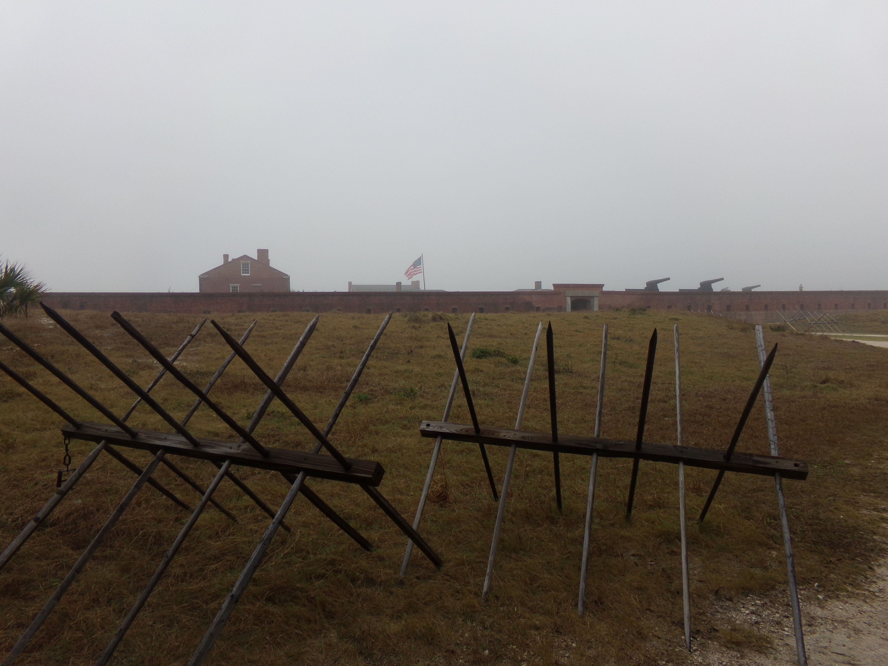
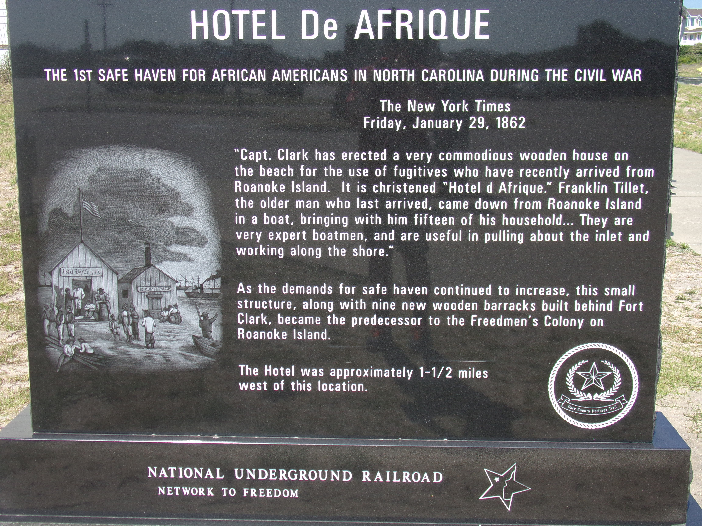

Built in 1870, the Cape Hatteras Lighthouse is operated by the National Park Service.

The Moon setting behind the grand tower. This lighthouse was a key aid to navigation for ships entering one of the most dangerous sections of the Outer Banks.
Inside the tower, there is a total of 268 steps that lead from the base to the lantern room.
The original 1st order Fresnel Lens. This lens enabled the light to have a range of more than 18 miles out to sea.
Cape Hatteras shines at twilight. A silent sentinel to the history it has witnessed, including the Civil War.The Outer Banks was home to many battles in attempts to gain control of the coastline.

Union troops controlled the North Carolina coast from 1862-1863. The Navy patrolled the coastline and the inlets and rivers. They set up camps and occupied the Outer Banks until the end of the war.
Originally built by the Confederate government, Fort Clark had 7 cannons positioned on the outer walls facing the ocean. However, in August 1861, Union troops landed and took the fort that had been abandoned by Confederate troops due to the lack of gunpowder.
A marker commemorating the settlement that was formed to house slaves that were attempting to escape their fate. As word of this refuge spread, more and more came. Many would move to Roanoke Island to form a Freedmen's Colony after the end of the war.